第17章：欧式二元期权（Binary Options: European Style）
Options that are trivial to price (like binary options) are difficult to hedge. Options that are difficult to price (like Asian options) are trivial to hedge. —— Howard Savery, Exotic Options Trader
导读：本章要解决的问题
本章是全书第三部分（奇异期权的交易与对冲）的开篇。Taleb 在这一部分把视角固定在动态对冲者（和有见识的客户）一侧，不做工具的轶事式罗列，而是通过把风险拆成模块来讲对冲技术。他给从未交易过的风险经理立了三条纲领：软路径依赖期权的风险只能通过吃透美式二元和停时来理解；多资产期权要从矩阵分析和交叉 gamma、把协方差矩阵直觉地看成一个波动率来理解；非时间齐次的风险要从日历价差和前向波动率来理解。Asian 期权只是篮子方法在时间上的应用，回望期权只是障碍期权的一个脚注，都被列为次要。
之所以从欧式二元讲起，是因为"pin"（钉）这个概念必须先吃透，才能进而理解美式二元（它多了一个未知且极不稳定的"久期"，即停时）和障碍期权。Taleb 说 pin 的概念如此核心，以至于他当初正是带着这个题目开始写整本书，前面所有章节都是为了给读者备好驾驭障碍结构所需的工具。二元期权是交易员最好的训练场，多数奇异结构和每一个 bet 的核心都坐着一个二元；它也是检验风险经理的高级考题，很多有经验的风险经理栽在二元这门考试上。
把全章压缩成几条主线：
- 二元期权定价平凡、对冲困难。支付不连续（要么全额、要么零），用连续支付的常规结构去对冲极其昂贵。它的核心难点先是 skew（远离到期时）、后是 pin（临近到期时）。
- 二元是"伪装的窄 call 价差"。一个支付 1 美元的二元，等于一个无穷窄的 call 价差的极限，于是 。它天生是一个 risk reversal：价外做多 gamma、价内做空 gamma、平值处退化成期货。
- skew 对二元的定价有放大效应，因为复制组合的名义量极大（一个 tick 要放大 100 倍），两腿之间哪怕极微小的 skew 差也会被这个名义量放大成可观的价值。正式定价公式是 。
- bet ≠ delta。bet 只关心"高于行权价的次数"（频率），delta 还要关心"赔付的幅度"。这个区分引出 skew paradox、delta paradox 和令人不安的 binary paradox（同一笔 bet 在不同 numeraire 下价格不同）。
- 二元的 delta 是一个 Dirac delta，临近到期时在行权价附近一点上趋于无穷、别处趋于零，行为像常规期权的 gamma；bet 的 gamma 则像常规期权的 DgammaDspot（三阶导）。
- 最优做法是把 pin 风险"统计化"：像保险公司承担可分散的局部风险一样，持有足够多的 bet 让方差被数量主导。skew 可对冲，pin 不可对冲。
笔记沿原文 Part III 引言 → 欧式二元定义 → 混合凸性 → 用香草对冲 → spot/forward bet → 按 skew 定价 → skew paradox → bet 与 delta 之别 → 对冲结论 → 三个案例研究（或然权利金、betspread、多资产 bet）的顺序展开，在每处把交易语言接回数学结构：二元=∂C/∂K 接 Breeden-Litzenberger、skew slope 接曲面斜率、fair dice 接风险中性鞅约束、Dirac delta 接到期 gamma、binary paradox 接 Jensen 不等式与 numeraire 变换。
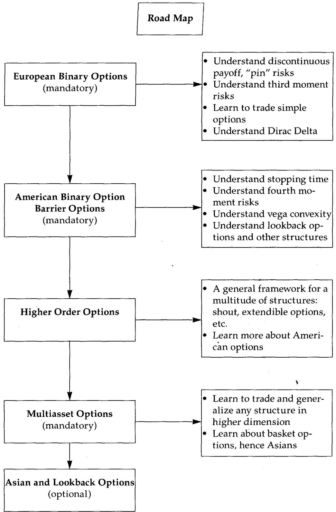
一、欧式二元期权：定义与训练价值
这类期权也叫数字衍生品（digital derivatives）、bet 期权、gap put/call。
一个二元期权在义务被满足时支付一个单一金额。之所以叫"二元"，是因为它像 0 或 1：要么支付全额、要么支付零，中间没有任何过渡。正是这种不连续支付，让二元期权特别难用呈现连续支付的常规结构去对冲。二元或 gap 支付的反面是 ramp（斜坡），即常规期权。二元期权可以是美式或欧式。
一个欧式二元期权是对"到期时资产高于或低于某个水平"的押注。美式 bet 是"一触即发"（if touched）型，在起始到到期之间任何一刻一旦事件发生就终止 bet，因而更难对冲。欧式二元因此只能有一个行权价，不像美式可以是 either-or 型。本身没有所谓 double bet，因为一个欧式 double bet 可以构造成两个独立 bet 之和。
二元期权出现在许多结构里。或然权利金期权（contingent premium options）就是一个简单构造：欧式香草期权加上一个"若期权在值则支付初始权利金"的 bet（本章末有案例）。
常见的交易信念认为，欧式 bet 除了临近到期（现货进入行权价邻域、delta 变得爆炸）之外都容易对冲。Taleb 要说明的是：两种情形下都难对冲。事实上，许多钱是在管理一个离到期还很远的数字期权时不知不觉亏掉的。交易员能靠 bet 期权得到加速训练的一个原因是：bet 的 delta 模仿了常规期权的 gamma。欧式 bet 还常常呈现参数线性问题，让动态对冲者特别难对冲它的 vega。
这一节的纲领其实是给后面所有奇异期权定调：吃透二元和停时，就掌握了"junior stuff"的风险。把它接回理论，二元是奇异期权的"原子"，因为任何不连续或路径依赖的支付都可以分解出二元成分（障碍的 rebate 是美式二元，contingent premium 含一个 forward bet），所以二元的 delta/gamma 行为是理解一切 bet 类结构的基函数。
二、混合凸性：二元天生是一个 risk reversal
图 17.1 显示二元期权在价内时做空 gamma、赚 theta（但幅度温和），在价外时做多 gamma、付时间衰减；恰好在平值时，它丢掉全部 optionality、表现得像一个期货。这种"在一点两侧 gamma/vega 翻号"的 risk-reversal 特征，看起来让二元能用几个带 skew 的工具来对冲。Taleb 预告：二元的合适对冲是一个窄价差，且要按一个能"复合 skew 效应"的规模来做；最要紧的是，二元必须带着市场的 skew 结构来定价。在一个"抛售后变波动、上涨后失去动能"的商品里，这种结构可能相当有利，除非 bet 的价格已经包含了对这种不平衡的补偿（即我们称为 skew 的波动率差）。
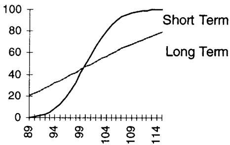
把显微镜对准做多 gamma 的那部分（图的左侧）。造成做多 gamma 的是局部凸性（local convexity）。一个二元在价外时呈现正杠杆（交易员冒更少的险去赚更多），在其他情形呈现负杠杆（冒更多的险去赚更少）。如果一个 bet 到期支付 1 美元、当前值 1 美分，它会呈现非常大的凸性特征：它能赚到 99 美分、只可能亏 1 美分。这看上去就像一个做多 gamma 的结构。
这一节的理论身份是支付的二阶结构。二元的支付是阶跃函数 ，它的价值是 在 下归一化的极限，所以它继承了 call 价格关于 的一阶导。价外深处价值接近 0、上方封顶在 1，这种"地板贴着 0、天花板封在面值"的形状天然是凸的（价外）和凹的（价内），于是 gamma 在行权价两侧翻号。"1 美分博 99 美分"正是凸性收益不对称的交易员语言：价外二元是一个被严重低估的凸性多头，呼应第 15 章"彩票效应长期利好买方"。
2.1 Option Wizard：重访 risk reversal
本书定义的 risk reversal，对应 gamma 和/或 vega 在某一点从正翻到负的情形。最初 risk reversal 指的是 fence（买价外 call、用卖 put 融资），但期权交易员很快用它泛指期权头寸里的不对称风险，它变成了三阶矩（the third moment）。对一个 book manager 来说，risk reversal 就是风险在一点两侧的切换。Taleb 引了一句迄今对 risk reversal 最好的描述："它像买干旱保险、用洪水保险来融资。"
这句话点破了 risk reversal 的本质：你在一侧做多保护、在另一侧做空保护，净敞口对"往哪边走"高度敏感。把它接回第 16 章 6.2 节，二阶波动率交易的标志就是 gamma 沿标的翻号；二元因为支付是阶跃，它本身就是一个最纯粹的 risk reversal，所以它是三阶矩（偏度）敞口的天然载体。
2.2 用香草对冲：二元是伪装的 call 价差
图 17.2 显示用普通香草期权保护二元的 vega 和 gamma 没有真正的困难。但随着到期临近，profile 会开始滑向 pin 敞口。图 17.3 显示临近到期时的价格敏感度：图形会在一个很窄的区段越来越垂直、在其余地方越来越平。
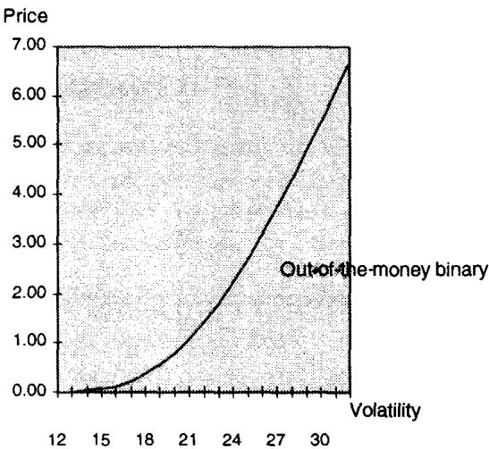
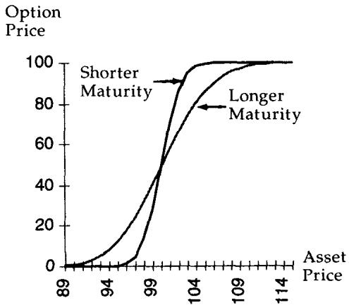
看图 17.3 的形状，找一个能模仿这种支付的结构，第一个想到的就是 call 价差。图 17.4 给出一个 call 价差：操作者做多 100.00 行权价、做空 100.01。
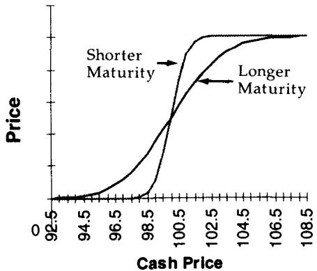
图 17.3 与图 17.4 的区别只在标度（scale），形状非常相似。这说明二元真的是一个伪装的 call 价差。它呈现 call 价差的全部特征：在多头腿附近（多头腿下方）多头腿主导，做多 gamma；在空头腿附近（空头腿上方）空头腿主导，做空 gamma。所以这个显微级的 call 价差在 100 下方做多 gamma、上方做空 gamma。和常规期权一样，gamma 在远离行权价处减弱，组合在某个现货处达到峰值，中间看起来就是一个 risk reversal。
还有一条关键信息支撑两个头寸的相似性：它们都是欧式、路径无关、共享同一到期日。既然区别仅在标度，把其中一个的规模放大就应当完美复制另一个。
下一步是算出对冲二元所需的 call 价差面值。假设 bet 满足时每单位支付 100 美元、不满足支付零。那么 call 价差的数量应使得一个 tick 代表 100 美元。所以交易员需要 10000 单位的 call 价差（）。但这种复制只有在"风险中性可能结局的整张地图上没有任何一个区段跟踪失败"时才处处有效。这个例子里交易员选了一个以不可分割的 0.01 "棒"移动的市场。如果市场以 0.05 的离散增量交易，他的任务会更轻松，因为复制量可以更小（2000 单位）。
这把"二元 = call 价差极限"的实务版讲清了：复制量 = 面值 / tick 大小。tick 越小、复制量越大，连续时间极限下复制量趋于无穷（下一节的 Dividing a Tick 会讲交易所为什么禁止劈 tick）。复制只在两腿之外有效、在两腿之间失效，所以 tick 越小、价差越窄、复制越完美，这正是 Breeden-Litzenberger 把二元价格写成 的离散根源。
2.3 Option Wizard：劈分一个 tick
交易所把把一个 tick 切成更小增量定为非法。否则交易员可以通过拆分交易来用更小单位成交。设想市场最小增量是 0.01，从同一个人那里买 50 手 100.00、50 手 100.01，就完成了一个 "ginzy"，均价是 100.005。交易所并没有把"在两个不同价格买入"定为非法，它把"以劈分 tick 为意图的交易"定为非法。非法的是对一个交易员说："如果你也按 100.00 卖我一些，我就按 100.01 从你这买一些。"
在连续时间金融里，复制交易需要以无穷大的量、对应无穷小的行权价差来恰当对冲 book。但市场并不连续交易，哪怕只是出于惯例，存在一个被称为 tick 的最小价格增量。在交易所这是正式规定（更小分数被禁止），在场外则是礼节和惯例的产物，多数屏幕和系统不处理小于某个分数的数，有些市场的交易员甚至认为显示过于精确的价格（小于 1/100）是失礼的。
这一节看似插曲，其实点出了离散市场与连续理论的根本张力：理论要求二元用无穷窄、无穷大量的 call 价差复制，而 tick 制度把这条路堵死。所以二元在现实中无法被静态完美对冲，pin 风险是 tick 制度的必然产物，这为本章结论"pin 不可对冲、只能统计化"埋下伏笔。
三、bet 的定义：forward bet 与 spot bet
要看清 bet 合约把满足条件定义为"高于"还是"至少"行权价，数学符号上即 还是 。差别很小，却影响复制。如果条款写"资产是 100 或更高我就付"，那么 call 价差要定义为多 99.99、空 100；如果写"高于 100"，复制就要多 100、空 100.01。
另一个重要特征是支付的时点。有些 bet（尤其价外时）作为期权出售，"买方"立即付一笔权利金、若资产到期满足 bet 则获得支付；另一些则被表述为 bet，输的一方付钱。两者唯一的区别在于权利金的贴现。
spot bet 是一方初始支出权利金、若 bet 条件满足则收到支付。forward bet 是双方约定在期末交换支付，于是支付初始权利金的一方被任意地称作"买方"。Taleb 举了几个例子：感恩节后那个周五现货高于 100 就一方付 50 美元、否则收 50 美元，是 forward bet；网球比赛结果的赌注通常是 forward bet；一张"墨西哥若维持在区间上方付 6% 利息、否则 5%"的票据是 spot bet（持有人通过降低的票息提前为 bet 付费）；付 10 美分、若下次会议联邦税如何则可能收 1 美元的合约是 spot bet。
所以除了下面这点之外没有值得分析的花样：forward bet 按远期估值；spot bet 一条腿按现值（初始支付）、一条腿按远期（收到的支付）。本书尽量少纠缠简单的利率算术，所以读者可以（暂时）假设利率为零，去做更大更要紧的事。
按惯例，call bet 指一方押"到期价格高于行权价"的协议；一方的 call bet 就是另一方的 put bet。也按惯例，bet 以全部赌注的百分比报价：若最终支付 1 美元、bet 报价 25 美分，对应 25 美分的 spot 或 forward 支出；若 bet 支付 500 美元，则是 125 美元。
这一节的术语区分在理论上对应贴现因子的位置。forward bet 是纯粹的风险中性概率 （零利率下），spot bet 多了一个把初始权利金贴现的 。后面的定价公式列表会看到 "binary cash call = " 与 "binary forward call = " 正是这个区别。Taleb 让利率归零，是为了把注意力集中在 bet 真正的难点（skew 与 pin）上，而非利率算术。
四、按 skew 定价
假设复制对探查一个期权的结构、找到它理论价值的感觉很重要。但只要考虑哪怕最微小的交易成本，复制在实操上就相当不切实际，Taleb 说他从没见过谁真用窄价差去复制一个二元期权。
由于 skew 存在于多数市场、且二元对 skew 敏感，定价时应当做恰当的考量。如果最小 tick 是 0.01，期权会对 100 和 100.01 之间的 skew 差敏感。这不是玩笑：如果由于价差上涉及的巨大金额，两个行权价之间存在一个微观的 skew 波动率差，这个 skew 会对它的理论价值产生有意义的影响。
定价 skew 效应的办法是看更宽的复制组合及其涉及的金额。假设与二元同到期的 99.5 和 100.5 行权价之间有 0.5 个波动率点的差。skew 对结构的效应应当等于 skew 对复制组合的美元效应。计算如下。
假设交易员有一个 3 个月、市场高于 100 就付 100 美元的 bet（为简单计，假设利率为零、波动率 15.7）。Black-Scholes-Merton 值是 49.6。在这个假想的、市场以很大的 1 点增量移动的世界里，99.50/100.50 复制价差大约是 bet 的 100 倍（这个假设是为了排除市场结算在 99.50 和 100.50 之间的可能，否则复制组合无法匹配二元）。取 call 价差的 BSM 值，bet 的值应接近 49.6。所以在这个只有一美元移动的世界里，交易员看上去是被对冲了的。
但市场里有 skew，用一个夸张的例子能看出来：假设 call 价差因为 99.5 call 比 100.50 高一个波动率点而交易在 0.69。这意味着二元期权需要更贵，必须交易在 69 美元（相对 BSM 的 49.6），以补偿 skew。会有人押这么多说现货到期会更高吗？这些数字说明 skew 效应能对 bet 多夸张。
实践中 skew 不会像上例那么剧烈，除非是在有偏资产、或一次焦虑发作后的 SP100 期权上。正常 skew 范围（在乖巧的资产里）在 0.25 delta call 与 0.25 delta put 之差（即 75 delta call 与 25 delta call 之差）上是 0.5 到 3 个波动率点。插值一个 2 点 skew，一个 3 个月期权在 15.7 波动率下，99.5 与 100.5 之间约有 0.12 的 skew（因为这个差是 0.06 个 delta，而 0.5 个 delta 对应 2 点 skew）。0.12 skew 的价格效应是 call 价差上的 0.025，使行权价之差变成 0.524 而非 0.49。于是通过复制组合，bet 的价格被发现约值 52.4 美元而非 49.6。这仍然足够有意义，足以提醒交易员潜在的错价。
4.1 Option Wizard：复制地图
两个路径无关的交易，若在所有可能价格的地图上呈现相同支付，价格就应当相等（由随机占优规则）。
路径无关意味着它们可以只看到期来处理。前面已经限定过：路径无关期权在动态对冲时会变成路径依赖；这里讨论的是静态对冲，不是动态对冲。用 call 价差复制二元，必须看极限情形：call 价差在两个行权价之外有效、在之内无效。所以 call 价差越窄，复制越完美。作为二元的极限分解，call 价差的价格永远略高一点点，这个差随增量收窄而消失。
验证。 把增量扩宽到一个相隔 50 delta 的价差（即按与 25 delta risk reversal 等价报出的那个），会得到 95.70 和 105.4 两个行权价，相隔 9.7 点。这时需要执行 9.52 个价差才能在 bet 满足时（市场结算在 105.4 上方）赚 100 美元、在市场结算于 95.70 下方时亏掉为价差付的权利金。按 skew 定价，这个香草 call 价差值 52.30 美元；而同一个价差按 BSM 定价（两腿用同一波动率）会得到 49 美元，与无 skew 的 bet 公允价值相近。
这里的要害是 skew 效应通过名义量被放大。无 skew 时 bet ≈ 49.6；引入真实 skew，宽价差的两腿波动率不同，价差价格上移，反推回 bet 就涨到 52.4。窄价差（0.06 delta 间隔）和宽价差（50 delta 间隔）给出一致的修正方向，验证了"二元价格 = 无 skew 价格 + skew 修正"这个分解的稳健性。
4.2 正式的 skew 定价公式
直觉上，二元的价格可以定义为"到期落在价内"的风险中性概率（即靠 delta 中性把资产收益的均值从方程里拿掉）。取前面"通过 call 价差完美复制"的论证，用 call 价格 、二元行权价 、复制 call 价差两腿之差 ，得到：
于是它形似 call 关于行权价的导数。进一步，如果交易员判定 call 的波动率是 的函数，他就创造了一个 skew 函数、建立了一套定价机制。
把 skew 取作 的函数 ，把 点的 skew slope 取作波动率关于行权价的导数（如图 17.5），bet 的值变成：
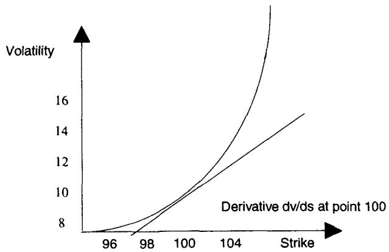
举例：现货在 100，为教学计假设零利率，考虑 3 个月 100 bet call。3 个月到期的 skew 在 99.50 与 100.50 之间增加 0.5 个波动率，skew slope 就是 。3 个月平值 call 的 vega 是每波动率点 0.190。于是 bet 的值是 （15.7% 波动率下的 BSM 值），对应 bet 满足时到期支付一单位。
这条公式是全章的定价核心，值得把它的理论身份讲透。第一项 就是 Breeden-Litzenberger 的风险中性密度（在零利率下二元价 = = 落在价内的概率）。第二项是 skew 修正：当波动率随行权价变化（），call 价格对 的全导数要加一项链式项 ，即"vega × skew 斜率"。这把"二元对 skew 敏感"从直觉变成了一个可计算的修正项：负 skew slope（下行波动率高）抬高 put bet、压低 call bet。它也是 4.1 节验证里 52.4 那个数的解析来源。
五、skew paradox：bet 只关心频率，不关心幅度
测验：告诉读者一个市场任何一天只以 1 美元的步长上涨、以 9 美元的步长下跌，没有别的可能价格变化（过程见图 17.6）。10 步里 9 步上、1 步下。读者愿意为一个一天期、平值 call bet（明天收盘高于当前则付 1 美元）付多少？
答案是 0.90 美元。关键在于：bet 不依赖期望收益，而依赖现货高于的期望次数。市场以大幅度下跌是无关的，bet 期权的支付无论市场跌 1 美元还是跌 50 美元都一样。由 put-call parity 或同样的论证，put 值 0.1。这是 skew 的一个直觉解释，也显示了 bet 与 delta 的区别：delta 不像 bet，它关心移动的幅度，因为交易员需要为那种可能性受到保护。
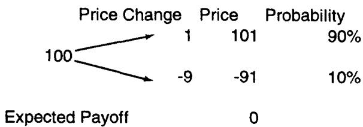
这个 paradox 是全章最精炼的直觉。同一个"上涨"事件发生 9 次、"下跌"发生 1 次，bet 只数次数，所以 call bet 值 0.9，远高于"平值=0.5"的天真预期。但这个市场分明是负偏的（小涨多、大跌少），偏度把 bet 价格推离了 0.5。这就是 skew 在 bet 上的放大效应的最干净版本：bet 是对累积分布函数在 处取值的押注，它对分布的形状（偏度）极其敏感，而对幅度完全无视。
5.1 fair dice 论证：风险中性鞅约束
图形上可以表示成图 17.7：面积 A 需要等于面积 B。金融市场对每一只证券施加约束，要求左积分等于右积分加上风险中性漂移，得到一个风险中性漂移的均值 。
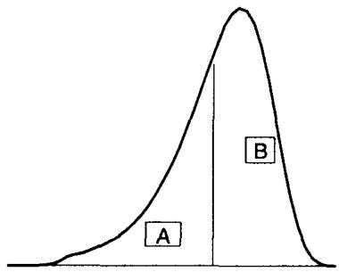
于是 被这样设定：
其中 是支付、 是附于它的概率。这并不意味着应有相等数量的观测落在篱笆两侧。bet 只关心观测的数量，不关心每个观测的期望值。因此" 在某日超过 "的 bet 就是：
skew 通过增加左积分上的潜在支付，需要用均值向右移动来补偿，以防市场给空头卖方比多头持有者更高的期望收益（这就是所谓 fair dice 论证）（图 17.8）。
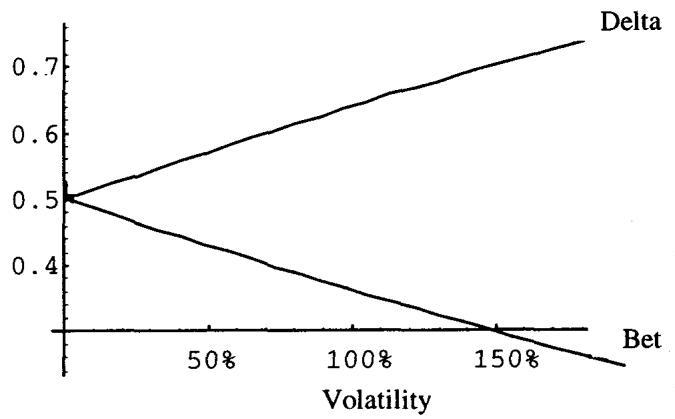
fair dice 论证的理论身份是风险中性测度下的鞅条件。无套利要求贴现资产价格是鞅，即 ，左右"加权面积"必须平衡到这个漂移。bet 价格是 测度下事件 的概率 ，它只数概率质量、不加权支付幅度。当分布偏斜（左尾被拉长、潜在大跌的支付变重），鞅约束强制均值右移以维持公平，这恰恰改变了 的概率，于是 bet 价格随 skew 移动。这把 skew paradox 从一个脑筋急转弯升级成了无套利定价的一般结论。
六、bet 与 delta 之别：重访 delta paradox
为什么 delta 不是行权的概率？仅仅因为 delta 把支付（payoff）也考虑进去了。
在偏斜分布的图（图 17.7）里，delta 对 call 来说就是右积分、对 put 来说就是左积分；而"落在价内的概率"，直白地说，就是二元期权。区别很微妙。处理几何布朗运动时，分布向右移（对数正态的复利效应在第 7 章讲过），波动率越高右移越多，因为资产以恒定百分比增长。波动率越高、右移越大，这导致 delta 作为对冲保护而增加。
波动率上升伴随分布右侧的增大。更高波动率下的分布会呈现一个鼓起的右侧，体现对数正态效应。按前面的原则，这会导致左侧风险中性观测频率增加，以在该环境里维持 fair dice 条件（见 Module B）。左侧观测的增加，是为了补偿右侧支付与左侧支付之差。于是 bet 的值会下降。
delta 在那里是为了同时计入可能的支付和它们的频率，而二元期权只计入频率。
这一节是全章的概念枢纽，把 bet 和 delta 彻底分开。两者都涉及"落在价内"，但：
- 二元（bet）= = 风险中性下 的纯概率，只数频率。
- delta = = 把支付幅度加权进去的对冲比例。
与 相差 ，这个差正是对数正态右移的度量。波动率上升时，（delta）上升（对冲保护增加，因为大涨的支付幅度变重），而 （bet）下降（fair dice 要求左侧频率增加以补偿右侧加重的支付）。同一个"波动率上升"让 delta 和 bet 反向移动，这就是 bet≠delta 的数学根，也是图 17.8 想画的事。
6.1 Option Wizard：欧式 bet 的定价公式
- 香草 call
- Delta
- Binary cash "call"
- Binary cash "put"
- Binary forward "call"
- Binary forward "put"
其中 是标的， 是计价货币（numeraire）利率， 是所涉资产的收益（外币利率或股息率）， 是行权价， 是到期时间。
这张表把第三节 spot/forward 的区别落到了公式上：cash（spot）bet 多一个贴现因子 ，forward bet 就是纯 。call 与 put 的 bet 互补（和为 或 1），对应"一方的 call bet 是另一方的 put bet"。
6.2 Option Wizard（进阶）：Dirac delta
Dirac delta 常用于冲激函数（impulse function）。对交易员来说，它容易用来可视化某个特别公告前后某一瞬间波动率的行为：日波动率可能仍是 16%，但那一秒的前向-前向波动率会高得离谱（成百上千），难以测量。
delta 函数可以这样简化：取 为一个尽可能小的数，那么边长为 和 的矩形面积为 1，而周围所有面积测度为 0。简化定义： 当 ，否则 。
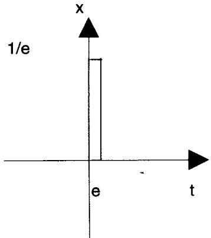
Dirac delta 常用于到期时的 gamma：累积 gamma 就是 delta，但在极窄定义的到期瞬间它看起来非常大。它也适用于临近消亡的二元期权的 delta。这个工具是下一节"二元的 delta 是 Dirac delta"的数学准备。
6.3 数学注记：binary paradox 与 numeraire 倒置
两国货币 paradox 的一个特征是：一方的 delta 是另一方的 bet，反之亦然。这源于 Jensen 不等式：（倒置价格）的期望不等于 的期望的倒数（见 Module C）。此外，对某个特定行权价，put 的 delta 等于 binary call 的价格，反之亦然。这能引出 binary paradox，一个不可思议的情形：
- 一个基于美元的人在 USD-DEM 上以美元计的 bet，与一个基于德国马克的人在 USD-DEM 上以马克计、同行权价同到期的 bet 翻译成美元后，价格不同。这种差异会随到期时间和波动率的增加而增大。
- 原因很直接：把 定义为基于美元的人的 bet 价格，那么由 numeraire 倒置， 就是基于马克的人的 bet 价格。
- paradox 的延伸有点令人不安：两个在不同大洲的头寸无法按同一价格标记；而且两个在篱笆两侧做同一笔交易的交易员，会在同一条腿上都显示盈利或都显示亏损。
binary paradox 是本章最深的一处理论映射，它把 bet≠delta 推到了 numeraire 相对性的高度。基于美元的人看到的 bet 是 ，基于马克的人在自己的 numeraire 下看到的同一事件的 bet 是 （因为换 numeraire 等于把度量从 换到 ，Girsanov 把漂移移动了 ，恰好把 变成 ）。Jensen 不等式 保证两者不相等，且差随 增大。这意味着二元的"价格"不是绝对的，它依赖你用谁的货币记账，呼应 Module C 的 two-country paradox。对实务的冲击是：跨币种的二元 book 无法用单一价格标记，两个对手可能同时认为自己赚了。
七、最初的对冲结论
Taleb 把前面的分析收成几条对冲准则：
- bet 必须用前述方法、把市场的 skew 考虑进去来定价。
- 交易员不应被"原点处看似没有 gamma 和 vega"所欺骗。
- 数字期权最好的复制是一个宽 risk reversal（包含对 skew 的任何保护）。这里有交易成本与最优对冲之间的权衡：交易员需要随时间推进、以渐进的步伐收窄两个行权价之差，直到到期。由于这种最优做法消耗交易成本，需要不频繁地对冲。
- 当 bet 期权远离到期时，真正的风险是 skew；临近到期时，风险转移到 pin。实践中，skew 可对冲，pin 不可对冲。
这四条把全章的风险时序讲清了：远离到期是 skew 风险（连续、可用宽 risk reversal 对冲），临近到期是 pin 风险（不连续、不可对冲）。"不应被原点处看似没有 gamma/vega 欺骗"尤其重要，它呼应导读里"离到期还远时不知不觉亏钱"的警告，因为 skew 敞口在平静期被低估。"渐进收窄行权价差 + 不频繁对冲"则是交易成本约束下的最优解，呼应第 16 章动态对冲的成本-频率权衡。
八、二元的 delta 是一个 Dirac delta
如图 17.9 所示，bet 的 delta 看起来像常规期权的 gamma，而且它会像期权的 gamma 一样行为和"bleed"。这是因为一个 delta 几乎就是一个 bet（严格说，在风险中性宇宙里）。所以 bet 的 delta 就是 gamma。
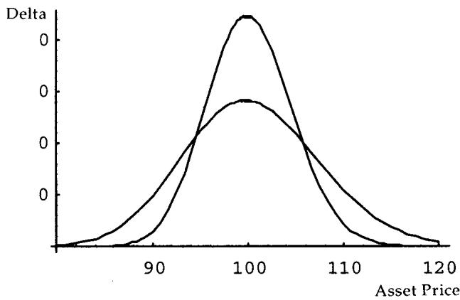
熟悉 Dirac delta 函数有助于理解 bet delta 的移动方式。Dirac delta 在除一点之外处处为零、但在整张地图上的积分等于 1。同样，到期时的 delta 处处为零，但 delta 在所有可能移动上的积分等于 bet 的面值。
常规期权的 gamma 在到期那一秒也服从一个 Dirac delta，但很少有交易员认真对待到期 gamma，因为它只是敞口的导数。而对二元期权，那个别扭的 delta 是值得关切的，因为很多交易员在市场流动性足够时用现金对冲它。
delta 可以看成"为了在现金的某个移动上打平所需购买的数量"。因为交易员知道他在某个特定移动上需要赚多少钱，这个概念几乎是平凡的。但越接近到期，在不跨越 bet"行权价"的区域里需要购买的数量越接近零，而 bet 的 delta 会在接近行权价的一个极窄点上变得接近无穷。实践中，完美复制的例子成立：如果市场只允许以一个 tick 增量移动，比如在 100.00 和 100.01 之间，那么 100.00 与 100.01 之间的 delta 会是 bet 支付规模的 100 倍（若是"至少"型；否则交易员要在 99.99 和 100.00 之间对冲）。一个押 100 美元的交易员需要 的面值头寸来满足他的风险。
图 17.9 显示 delta 如何随期权临近到期而集中在行权价附近。图 17.10 显示临近到期时 bet 价格的"阶跃函数"，图 17.11 显示 Dirac delta，即图 17.10 那个函数的导数。
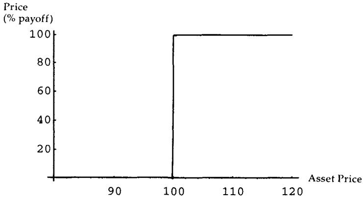
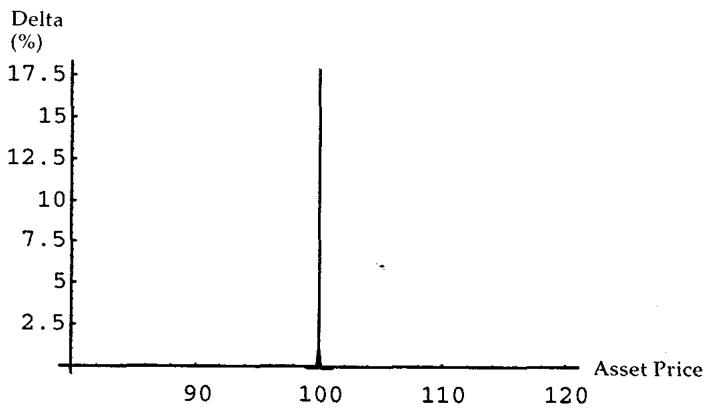
这一节的理论身份很干净：二元的价格临近到期收敛到阶跃函数 （图 17.10），它关于现货的导数就是 Dirac delta （图 17.11）。所以二元的 delta = 在 处发散、别处为零，积分回去等于面值。这正是"bet 的 delta 像常规期权的 gamma"的原因，因为常规 call 的价格临近到期也收敛到 ramp ，它的二阶导（gamma）也是 Dirac delta。二元的一阶导 = 香草的二阶导，所以二元把交易员对"到期 gamma"的认识提前了一阶，这也是为什么 Taleb 说交易奇异期权能帮人理解常规工具。
8.1 bet 的 gamma
因为 bet 的 delta 像期权的 gamma，可以想见 bet 的 gamma 会像 DgammaDspot，即关于现货的三阶导。Taleb 借此点出：交易奇异期权能帮人学习常规工具的行为。
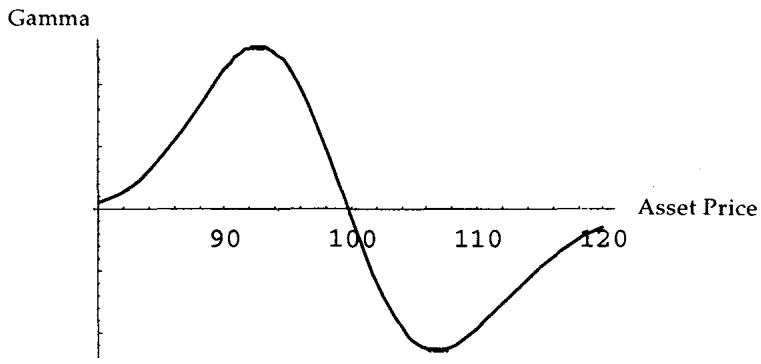
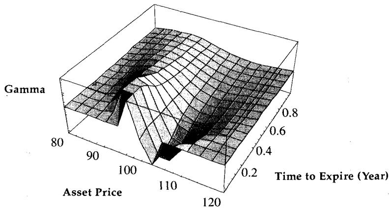
和香草期权一样，bet 的 gamma 在期权离到期更远时更平、更稳定（图 17.12 和 17.13）。把导数阶数对齐看就清楚了：二元价 ↔ 香草的一阶（delta），二元 delta ↔ 香草 gamma（二阶），二元 gamma ↔ 香草的 speed（三阶 DgammaDspot）。每升一阶，奇异性更尖锐、临近到期越发散，这是阶跃支付反复求导的必然。
九、结论：统计交易 vs 动态对冲
总结起来，用呈现连续支付的期权去对冲二元极其困难，因为交易成本高昂。即便有最小 tick 增量、存在一个完美匹配二元支付的静态对冲，它也不切实际、无法执行。所以最好把对冲留给那些"可能咬人"的结构，尤其在它们临近到期时。
只用 delta 对冲 bet 会更容易，有时盈亏方差能被降低，但绝不可能被消除，有些情形下还可能被增大。不过很容易"shooting"那个 delta，即在交易员会暴露于超出风险胃口的损失的区域里过度对冲它。所以如果 102 bet 让他头疼，他可以在 101 多买些 delta、承担市场跌回来的风险。在障碍之前很远就买入，会在 102 给他一些额外盈亏，可以花在围绕 bet 行权价反复进出的交易成本上。"shooting" delta 既不增加也不减少总回报，它只是以略微恶化远处盈亏为代价、平滑障碍附近的盈亏。
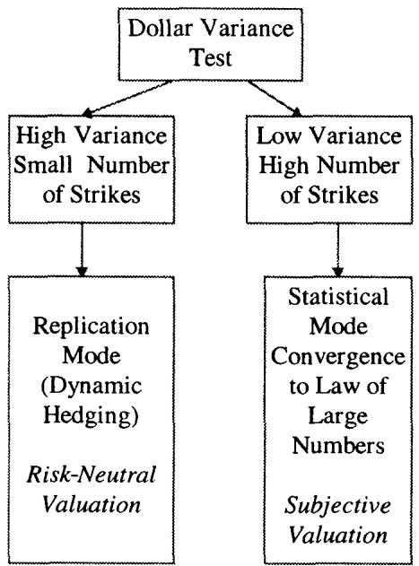
银行有时最好把一些二元期权当 bet 来运行，就像保险公司能承受一定量可分散掉的局部风险。二元期权的好消息是它们的最坏情形是有界且可分散的；它们的 vega 在接近平值时消失，提供了有意义的保护。一个麻烦是：这种情形下由于缺乏 delta 中性，交易员需要用自己的主观分布、而非风险中性分布来给 bet 估值。图 17.14 显示机构可用的不同对冲与估值政策。
许多非金融的 bet，比如对政治事件的押注，本质是二元的，别无选择：它们不适合连续对冲。许多银行发行支付挂钩政治事件或美联储政策判定的票据（比如押贴现率下调的票据）。正因为二元期权支付不连续，它们能轻易适配这类非金融、不可交易的 bet。
所以当涉及金额不至于致命时，交易员可以承担 pin 风险。目标是持有足够多的 bet 使之变得"统计化"，即让方差被 bet 的数量主导。否则，交易员就该少一些统计、多一些复制。
这个结论是全章的落点，它的理论身份是大数定律对不可对冲风险的处理。pin 风险无法被单笔静态/动态对冲消除（tick 制度和支付奇点决定了这一点），但它有界（最坏损失 = 面值）且在多笔之间近似独立。于是承担 pin 风险的正确方式是保险公司模式：持有大量独立的小 bet，让组合方差按 衰减、被数量"统计化"。当 bet 数量不足、单笔金额大时，大数定律失效，就必须退回复制（用窄 risk reversal 静态对冲）。这把第 16 章"期权盈亏方差被低估、需要更多分散"接到了二元上：二元的分散靠数量，不靠时间。"用主观分布估值"则是因为不做 delta 中性时，风险中性测度不再适用，定价回到真实测度下的精算估值。
十、案例研究一：或然权利金期权（contingent premium options）
这个组合虽是简单构造，仍被纳入，用来示范二元期权在打包结构里的用法。或然权利金期权是这样的香草期权：期权买方只在期权到期在值时才支付期权价格。因此它可以用简单期权加一个为权利金金额的 forward bet 来构造。
这听起来很像免费午餐，除了一个钩子：它在行权价附近制造了一个负盈利区（图 17.15）。期权持有人即便期权只是轻微在值也仍要付他的期权权利金，而如果期权初始平值，这个金额是他为常规期权本会付的两倍。换句话说，在这种交易上亏钱的唯一办法是"只对了一点点"（slightly right）。机械地看，它一般由一个常规期权加一个 bet 构成，bet 的面值对应初始权利金。
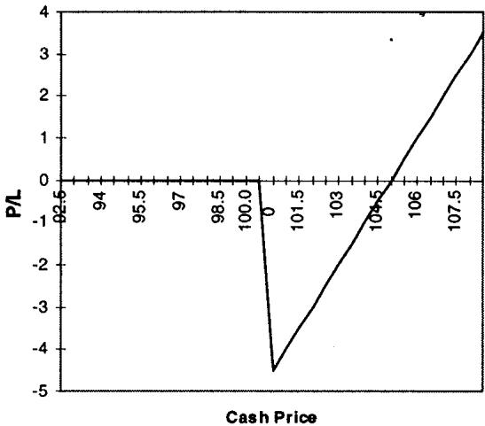
"亏钱的唯一办法是只对了一点点"是这个结构的精髓。把它接回分解：常规 call 的支付 减去"若在值则付权利金 "的 forward bet 支付 ，合成的到期盈亏在 上方紧邻处是 ，为负，直到 才转正。这个负区正是 bet 的阶跃在 处砸下来的，平值建仓时 翻倍（因为 bet 概率约 0.5，要用两倍权利金补偿）。这是二元的不连续支付在打包结构里制造局部"坑"的典型，与 pin 风险同源。
10.1 推荐用法：潜在贬值
或然权利金期权的一个普遍好用场是分布套利。交易员可以把或然期权的行权价设在他认为存在反射障碍的价位，比如货币区间、或某个被官方捍卫的资产移动上限。想法是：一旦价格突破这个水平，市场将不再被当局支撑，一次贬值会让期权清楚地在值。图 17.16 显示市场凶猛地穿过干预水平。
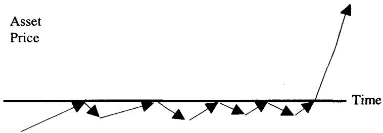
另一个有趣用法是在强烈有偏的资产上，那里下跌罕见但被放大。交易员可以用一个平值或然权利金 put 来构造头寸，从市场骤跌中获益。最后一个用法是在有"肥尾"的市场，那里两个方向的移动都被放大，使中间移动相当罕见。
这一节把或然权利金期权接到了第 15 章的分布主题。它的负盈利区惩罚"只对一点点"、奖励"大对"，所以它天然适合押注那些"要么不动、要么剧烈移动"的分布：被捍卫的货币区间（突破即贬值，呼应本章末和 Eurodollar 封顶式的反射障碍）、强偏资产（下跌罕见但剧烈）、肥尾市场（中间移动罕见）。它本质是在用 bet 的阶跃去切出"中间不赚、极端大赚"的盈亏形态，是分布套利的工具化。
十一、案例研究二：betspread
betspread 就是简单的二元 call 或 put 价差，没有任何神秘，由构造得到。一个 betspread 是这样的结构：若股价到期落在行权价 1 与行权价 2 之间则收取一定金额，落在别处则收取零。
从交易角度看，它们像蝶式（butterfly）和鹰式（condor，四行权价的蝶式）：如果一个二元 bet 像一个 call 价差，那么一个 betspread 就像一个 condor。本书不关注单个策略，但 betspread 值得一些关注，研究它能启发交易员管理一个纯二元期权 book。因为一个二元期权由构造就是一个 risk reversal，所以一个 betspread 就是一个 double risk reversal。这令人鼓舞，因为头寸风险可以沿分布下移一个矩（moment），见下面的分析。
一个 6 个月、若资产到期落在 100 与 105 之间付 1 美元的 betspread，形如图 17.17。随时间推移，betspread 的价格会自然收敛到最终支付，风险变得局部化（topical）。图 17.18 和 17.19 说明时间流逝对结构价格的影响。
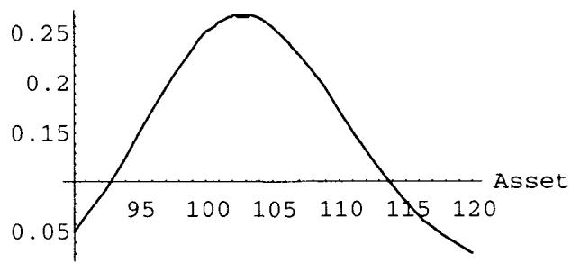
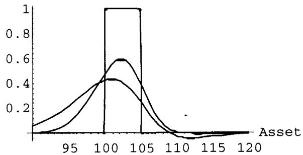
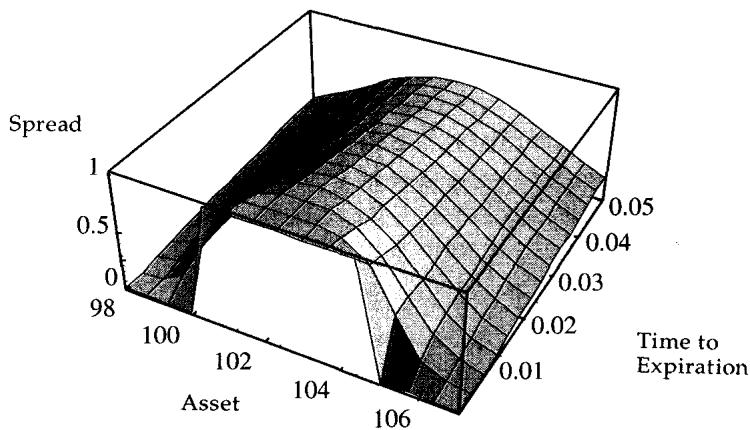
由此容易得出：也许对一个二元期权最好的对冲是一个相似的二元期权。
检视 gamma。图 17.20 显示一个 betspread 的 gamma，把它和图 17.12（一个 bet 的 gamma）比较。risk reversal（三阶矩）的方面似乎被一个五阶矩（fifth moment）的不稳定性替代了，在这个情形下后者是更可取的。
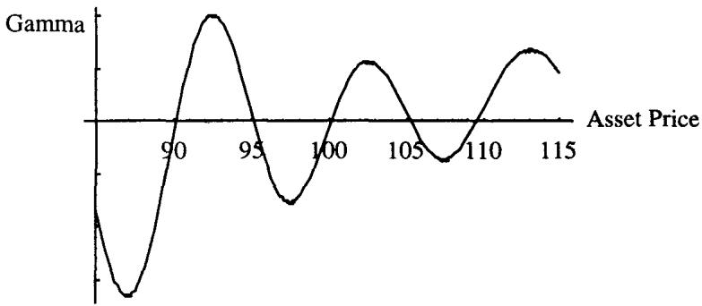
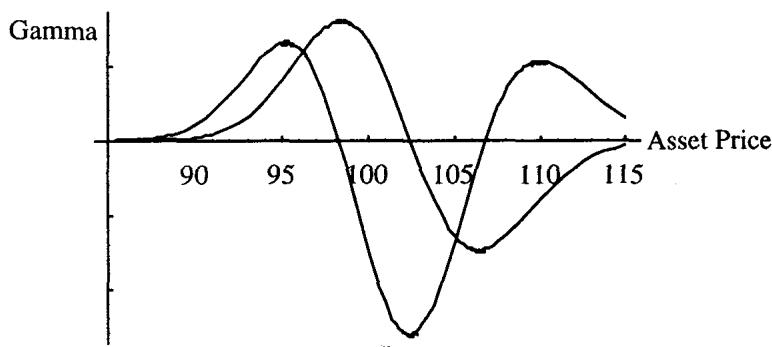
图 17.21 那个手风琴（accordion）是一系列 betspread。结论：bet 比常规期权更容易对冲，因为 vega 的不对称可以通过交易另一个 bet 来减少。
betspread 这一节的理论价值在于"把风险沿分布下移一个矩"。单个二元是 risk reversal，敞口集中在三阶矩（偏度），对 skew 高度敏感且不对称。把两个反向的二元拼成 betspread（double risk reversal），两个 risk reversal 的三阶矩敞口相互抵消，剩下的不稳定性被推到了五阶矩，量级更小、更对称、更可控。这就是"用一个 bet 对冲另一个 bet"优于"用香草对冲 bet"的根本原因：同类对冲让 vega 不对称在更高阶相消，而非引入新的标度失配。它呼应第 16 章"最好的对冲是相似工具"，并把它精确到了矩的语言。
十二、进阶案例：多资产 bet
一个 bet，若两个商品中任一个到期高于或低于某个水平就支付，称为多资产 bet（multiasset bet）。Taleb 留作练习：用本章和第 22 章的方法，研究一个含两个 either-or 型 bet 的结构对相关性的敞口。要直觉地给它定价，可以想象一个彩虹 call 价差（rainbow call spread）的极限分解的价值。
把它接回前面的主线：单资产二元是单资产 call 价差的极限（），多资产 either-or bet 就是彩虹 call 价差的极限。彩虹期权的支付依赖 这类算子，它对相关性敏感（第 15 章 4.5 节讲过彩虹期权 put-call parity 失效就源于此）。所以多资产 bet 在二元的 skew/pin 风险之上，又叠加了一层相关性敞口，需要交叉 gamma 来管理，正是导读里"每个结构都可通过相关性对冲变成多资产"的预告。
十三、本章综述：理论与实务的对照
| Taleb 的实务命题 | 对应的理论命题 |
|---|---|
| 二元定价平凡、对冲困难 | 价 = 易算；阶跃支付不可连续对冲 |
| 二元是伪装的窄 call 价差 | |
| 二元天生是 risk reversal | 阶跃支付在 两侧凸/凹翻号，三阶矩敞口 |
| 价外多 gamma、价内空 gamma、平值像期货 | 支付二阶结构：地板 0、天花板封面值 |
| "1 美分博 99 美分"的正杠杆 | 价外二元是被低估的凸性多头 |
| 复制量 = 面值 / tick | tick→0 复制量→∞，连续极限不可执行 |
| 交易所禁止劈 tick | 离散市场无法逼近连续复制，pin 是 tick 的产物 |
| forward bet 远期估值、spot bet 一腿现值 | cash bet vs forward |
| skew 对二元定价有放大效应 | 复制组合名义量大，两腿微小 skew 差被放大 |
| Bet = 无 skew 价 + vega×skew slope | call 对 的全导加链式项 |
| 窄/宽价差给一致的 skew 修正 | 随机占优：同支付路径无关组合同价 |
| skew paradox：涨1跌9 的 call bet 值 0.9 | bet 数频率不数幅度，对偏度敏感 |
| fair dice：面积 A = 面积 B + 漂移 | 风险中性鞅约束 |
| bet = | 测度下 的纯概率 |
| bet ≠ delta | bet 数频率；delta 加权支付 |
| 波动率↑：delta↑、bet↓ | ，对数正态右移 |
| binary paradox：跨 numeraire 价格不同 | vs ，Girsanov 换测度 + Jensen |
| 二元 delta 像常规期权 gamma | 二元 delta |
| 二元 gamma 像 DgammaDspot | 阶数对齐：二元一阶 = 香草二阶，二元二阶 = 香草三阶 |
| 远离到期风险是 skew、临近是 pin | skew 连续可对冲；pin 是支付奇点不可对冲 |
| shooting delta 只平滑不改总回报 | 过度对冲：局部平滑盈亏，远处略恶化 |
| 把 pin 风险统计化（保险公司模式） | 最坏有界 + 多笔独立，方差按 衰减 |
| 非 delta 中性时用主观分布估值 | 不对冲则脱离 ，回真实测度精算估值 |
| 或然权利金：亏钱靠"只对一点点" | 在 上方有负区 |
| betspread = double risk reversal | 两个 risk reversal 相消，敞口下移到五阶矩 |
| 最好的 bet 对冲是相似的 bet | 同类对冲让 vega 不对称在高阶相消 |
| 多资产 bet = 彩虹 call 价差极限 | 算子带相关性敞口，需交叉 gamma |
核心观点
第一，二元是奇异期权的原子。每个 bet、多数障碍结构的核心都坐着一个二元，吃透它的 delta/gamma 行为就掌握了一切 bet 类工具的基函数。它定价平凡（）、对冲困难（阶跃支付），这个反差是 Howard Savery 那句题记的全部含义。
第二，二元就是 ，一个伪装的窄 call 价差。这把它接到了 Breeden-Litzenberger：二元价 = 风险中性密度在 处的累积。复制量 = 面值/tick，连续极限下趋于无穷，而 tick 制度把这条路堵死，所以二元无法被静态完美对冲。
第三，skew 对二元有放大效应，正式价 = 无 skew 价 + vega×skew slope。因为复制组合名义量极大，两腿之间哪怕微小的 skew 差都会被放大成可观的价值修正。远离到期时，skew 是真正的风险（且可对冲）。
第四，bet ≠ delta，这是全章的概念枢纽。bet 只数"高于行权价的频率"（），delta 还要加权"支付的幅度"（）。波动率上升让两者反向移动。推到 numeraire 相对性，就是 binary paradox：同一个二元在不同货币下价格不同，跨币种 book 无法用单一价格标记。
第五，临近到期 pin 风险接管，且不可对冲，只能统计化。二元的 delta 临近到期是一个 Dirac delta（在 处发散）。pin 风险有界且可分散，正确的承担方式是保险公司模式，持有足够多独立的小 bet 让方差被数量主导。用 bet 对冲 bet（betspread）能把不对称风险从三阶矩下移到五阶矩，优于用香草对冲。
面对一个二元/bet 结构的操作清单
- 这是欧式还是美式 bet？欧式只看到期，美式带停时（下一章）。
- 合约是"高于"还是"至少"？这决定复制价差是 99.99/100 还是 100/100.01。
- 是 spot bet 还是 forward bet？权利金那条腿要不要贴现？
- 这个市场的 skew 有多大？用 Bet = 无 skew 价 + vega×skew slope 修正了吗？远离到期时 skew 是我的主要风险。
- 我被"原点处看似没有 gamma/vega"骗了吗？离到期还远时是不是在不知不觉亏 skew？
- 临近到期了吗？风险是否已从 skew 转移到 pin？pin 不可对冲，我能承受这个 Dirac delta 吗？
- 我是要对冲还是要统计化？手里的 bet 够多、够独立到让方差被数量主导吗？不够就退回复制。
- 这是跨 numeraire 的 bet 吗？我和对手会不会都以为自己赚了（binary paradox）？
- 如果是 betspread，我是不是把三阶矩敞口下移到了五阶矩？用相似的 bet 对冲了 vega 不对称吗？
一句话收束
本章最该记住的一句：二元期权是 ，它定价平凡却对冲困难，因为它的风险先藏在 skew 里、后浓缩成一个无法对冲的 Dirac delta（pin），所以正确的活法是把它当保险来统计化，而不是去追那条趋于无穷的复制曲线。 bet 只数频率、delta 还数幅度，记住这一条，就理解了 skew paradox、delta paradox 和那个令人不安的 binary paradox。